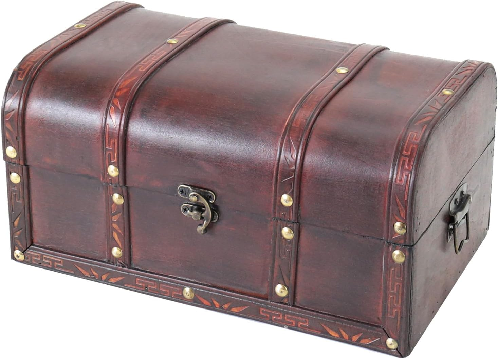

Tu as choisi la voie qui fait battre le cœur un peu plus fort. Bien.
Quelque part autour d'Agen, dans un lieu oublié des vivants, je vais dissimuler un coffre. À l'intérieur : mon livre — et l'histoire que je t'ai dédiée.
Pas de carte au trésor pour l'instant. Pas de croix rouge. Seulement la promesse qu'il t'attendra, dans le noir, patient, jusqu'à ce que tu viennes le chercher. La nuit, évidemment.
Prends ta lampe. Prends ta caméra si le cœur t'en dit. Et viens voir qui — ou quoi — garde ce coffre.

Le lieu n'est pas encore prêt. Reviens sur cette page : les premiers indices y apparaîtront bientôt, un à un.